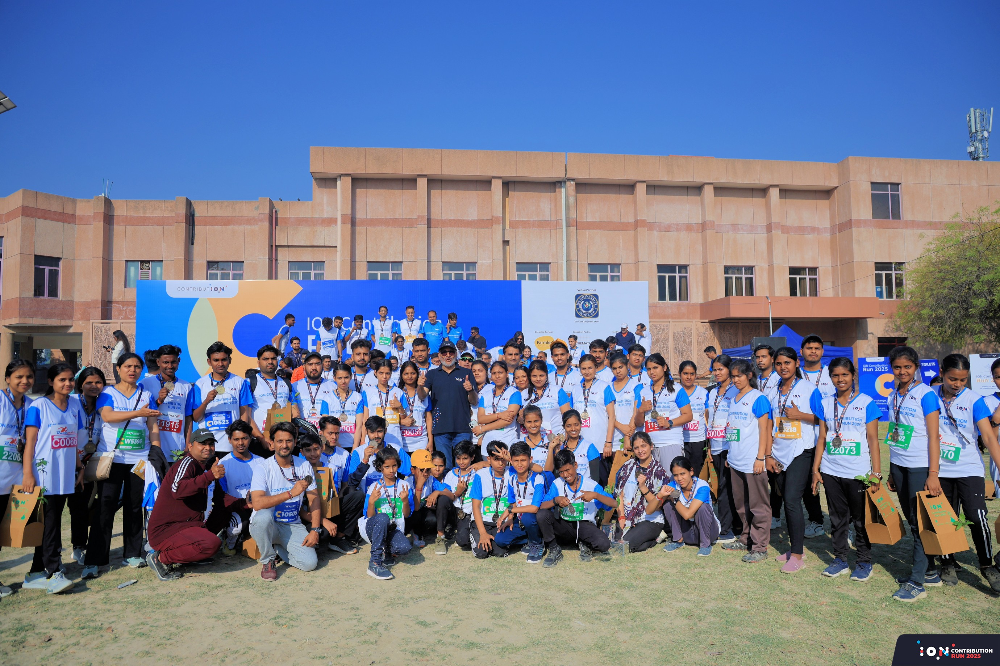

Moments That Moved Us
Browse every race and community event we’ve hosted. Search by city, year, month, category, or distance tags.
2018 – 2025

Moments That Moved Us
Combine search, dropdowns and quick pills to narrow down.
No past events match your filters. Try clearing your filters.